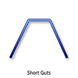
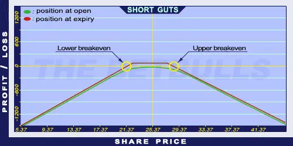

Description and use

Short Guts option is a version of Short Strangle, but instead of selling OTM options, ITM Call and Put options are sold. The strategy is characterised by unlimited risk on both sides. Short Guts is the opposite of Long Guts strategy. Short-term (one month or less) ITM Put and Call options are sold to enhance the profitability of the portfolio. The direction of the market is neutral. The investor speculates on sideways shares. The volatility is expected to decrease in the future. However, higher implied volatility is required to open the position. The duration of the strategy should be one month or less. This duration is highly recommended, because of the potential unlimited risk.
- Type: Neutral
- Transaction type: Credit
- Maximum profit: Limited
- Maximum loss: Unlimited
- Strategy: Neutral strategy
Opening the Position
Short Guts Option Positions
- Sell lower strike (ITM) Put options (maturity is one month or less).
- Sell higher strike (ITM) Call options (same quantity and expiration as the Put options’).
Steps
Entry:
- Make sure the share prices are moving within certain limits.
- The trading should take place in a period when no news (related to the underlying shares) is expected.
Exit:
- Buy back the options when it is making profit.
Basic Characteristics
- Maximum loss: Unlimited.
- Maximum profit: Net credit - Difference between strike prices.
- Time decay: Time decay has a positive effect on the value.
- Lower breakeven point: Lower strike price - Net Credit + Difference between strike prices.
- Upper breakeven point: Higher strike price + Net Credit - Difference between strike prices.
Advantages and Disadvantages
Advantages:
- The investor can profit from share prices moving within given limits.
- The strategy has a relatively high expected return.
- High premiums, because ITM options are issued.
Disadvantages:
- Too risky at the breakeven points.
- Limited profit.
- Highly risky strategy, not recommended to beginners.
Closing the Position
Buy back the Call and Put options.
Mitigation of Losses
Buy back the sold options.
Example

Short Guts strategy example with ABCD traded for $25.37 on 17.05.2017. The investor sells a Short Call option which has a strike price of $22.50, expires in June 2017, and costs $3.30 (premium). Then he sells a Short Put option which has a strike price of $27.50, expires in June 2017, and costs $2.80 (premium).
- Net credit: $6.10
- Maximum loss: Unlimited
- Maximum profit: $1.10
- Lower breakeven point: $21.40
- Upper breakeven point: $28.60